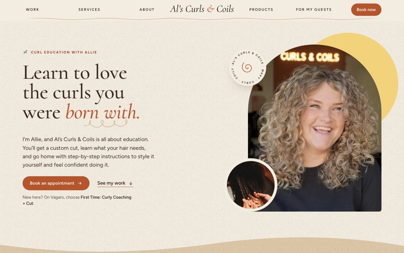

Al's Curls & Coils
Client: a curly-hair salon in Reno, Nevada built around curl education: a custom dry cut plus the know-how to style it at home.
- challenge
- Explain an unusual first-visit model, pricing tiers, and product recommendations without overwhelming a first-time guest, and get them to the booking page.
- approach
- A warm cream, rust and espresso palette with Cormorant display type and italic emphasis, a long-scroll story from the work to the services to the booking link, and a dedicated "for my guests" area for referrals and quick links.
- built with
- HTML, CSS and JavaScript · Cormorant and Figtree web fonts, self-hosted · Schema.org structured data · Vagaro booking · hosted on Cloudflare